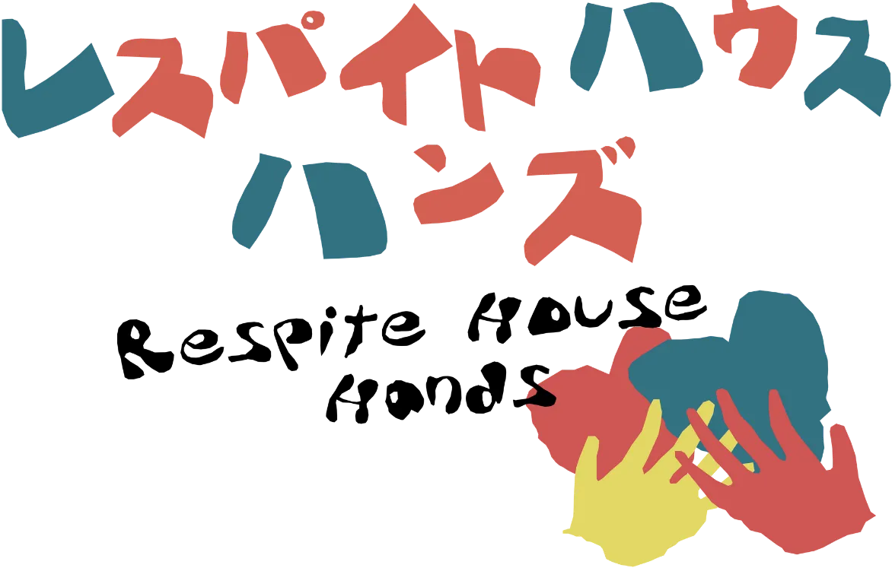
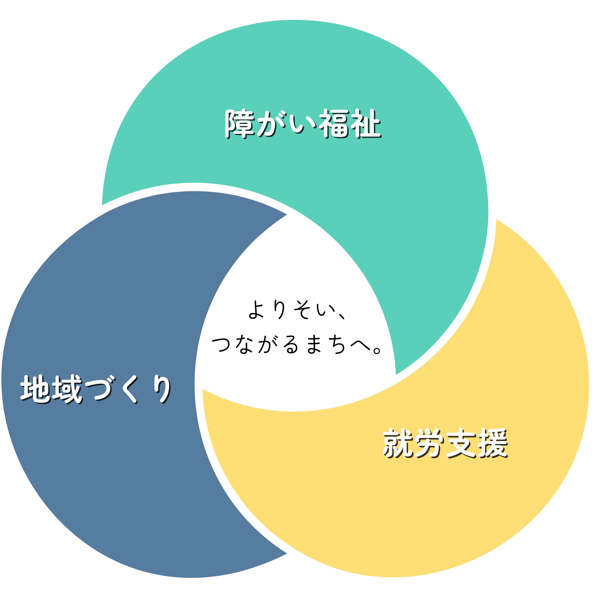

top

TOP
法人概要
設立趣旨
ハンズの理念
ハンズのあゆみ
定款
役員
事業所紹介
わぁははクラブ
居宅介護
相談支援
リトルハンズ
さくらなみき
マイルートリンク
若者サポートステーション
ジョブカフェ
市民活動センター
初めての方へ
アクセス一覧
FAQ
お問い合わせ
よりそう
支援
、つながる
安心
。
あなたに合う支援をさがす

ABOUT HANDS
私たちレスパイトハウス・ハンズは、
障がい福祉・就労支援・地域づくり
の三つの視点で、
子どもから大人までの暮らしに寄り添う、
このまちのNPO法人です。
NEWS
すべて見る
2025.11.11
お知らせ
新施設完成／見学会のお知らせ
2025.11.10
お知らせ
ホームページをリニューアルしました。
2025.04.01
お知らせ
マイルートリンクがスタートしました。
電話で相談
メールで問い合わせ
TOP